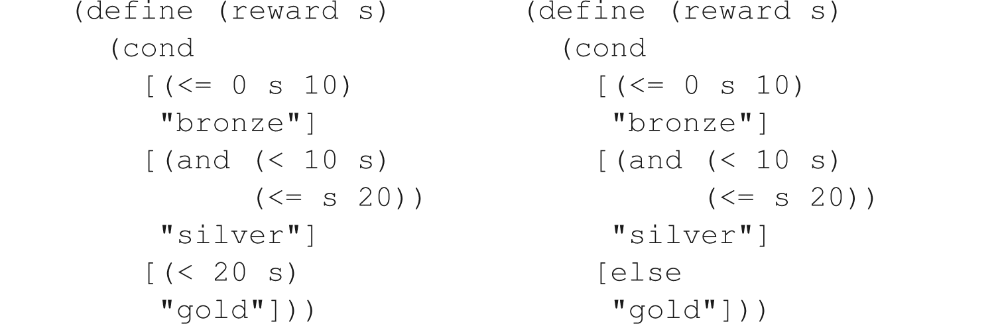

4.1 Programming with Conditionals
Recall the brief introduction to conditional expressions in the Prologue. Since cond is the most complicated expression form in this book, let’s take a close look at its general shape:
(cond
[ConditionExpression1 ResultExpression1]
[ConditionExpression2 ResultExpression2]
…
[ConditionExpressionN ResultExpressionN])
Brackets make cond lines stand out. It is fine to use (…) in place of […].
A cond expression starts with (cond, its keyword, and ends in ). Following the keyword, a programmer writes as many cond lines as needed; each cond line consists of two expressions, enclosed in opening and closing brackets: [ and ].
A cond line is also known as a cond clause.
Here is a function definition that uses a conditional expression:
(define (next traffic-light-state)
(cond
[(string=? "red" traffic-light-state) "green"]
[(string=? "green" traffic-light-state) "yellow"]
[(string=? "yellow" traffic-light-state) "red"]))
Like the mathematical example in the Prologue, this example illustrates the convenience of using cond expressions. In many problem contexts, a function must distinguish several different situations. With a cond expression, you can use one line per possibility and thus remind the reader of the code for the different situations from the problem statement.
A note on pragmatics: Contrast cond expressions with if expressions from chapter 1.6. The latter distinguish one situation from all others. As such, if expressions are much less suited for multi-situation contexts; they are best used when all we wish to say is “one or the other.” We therefore always use cond for situations when we wish to remind the reader of our code that some distinct situations come directly from data definitions. For other pieces of code, we use whatever construct is most convenient.
When the conditions get too complex in a cond expression, you occasionally wish to say something like “in all other cases.” For these kinds of problems, cond expressions permit the use of the else keyword for the very last cond line:
(cond
[ConditionExpression1 ResultExpression1]
[ConditionExpression2 ResultExpression2]
…
[else DefaultResultExpression])
If you make the mistake of using else in some other cond line, BSL in DrRacket signals an error:
> (cond
[(> x 0) 10]
[else 20]
[(< x 10) 30])
cond:found an else clause that isn't the last clause in its cond
expression
That is, BSL rejects grammatically incorrect phrases because it makes no sense to figure out what such a phrase might mean.
Imagine designing a function that, as part of a game-playing program, computes some award at the end of the game. Here is its header:
; A PositiveNumber is a Number greater than/equal to 0.
; PositiveNumber -> String
; computes the reward level from the given score s
And here are two variants for a side-by-side comparison:

The variant on the left uses a cond with three full-fledged conditions; on the right, the function comes with an else clause. To formulate the last condition for the function on the left, you must calculate that (< 20 s) holds because
• s is in PositiveNumber
• (<= 0 s 10) is #false
• (and (< 10 s) (<= s 20)) evaluates to #false as well.
While the calculation looks simple in this case, it is easy to make small mistakes and to introduce bugs into your program. It is therefore better to formulate the function definition as shown on the right, if you know that you want the exact opposite—called the complement—of all previous conditions in a cond.